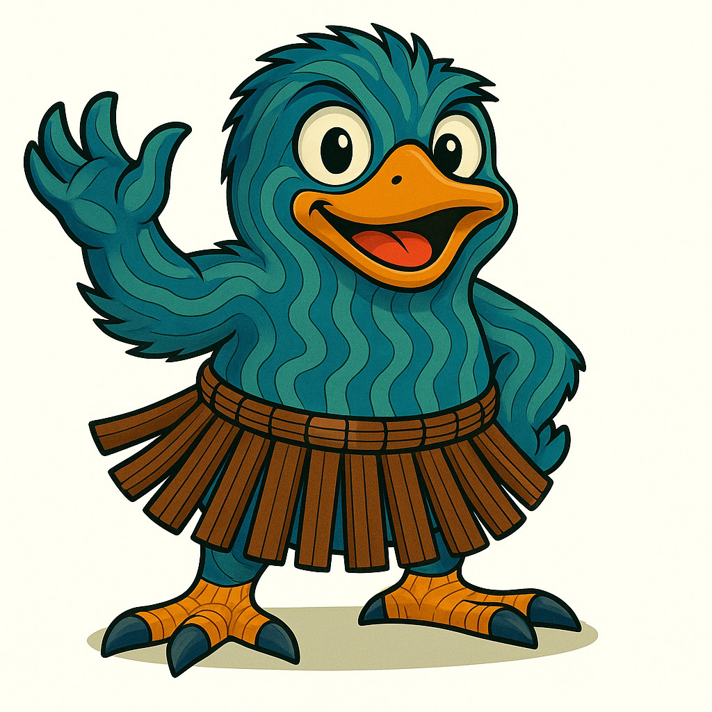

🌟 About Tutu
Kia ora! Tutu the Kiwi was created by Hamaka Murray to share stories, art, and whānau-focused creativity from Aotearoa. The kaupapa is about celebrating aroha, manaakitanga, and hononga.
Through books, maps, and adventures, Tutu invites tamariki and whānau into a world of laughter, learning, and imagination.